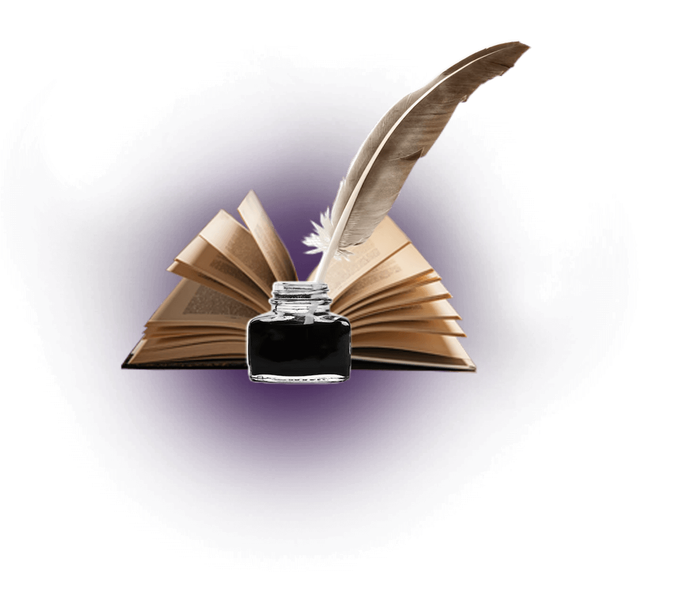
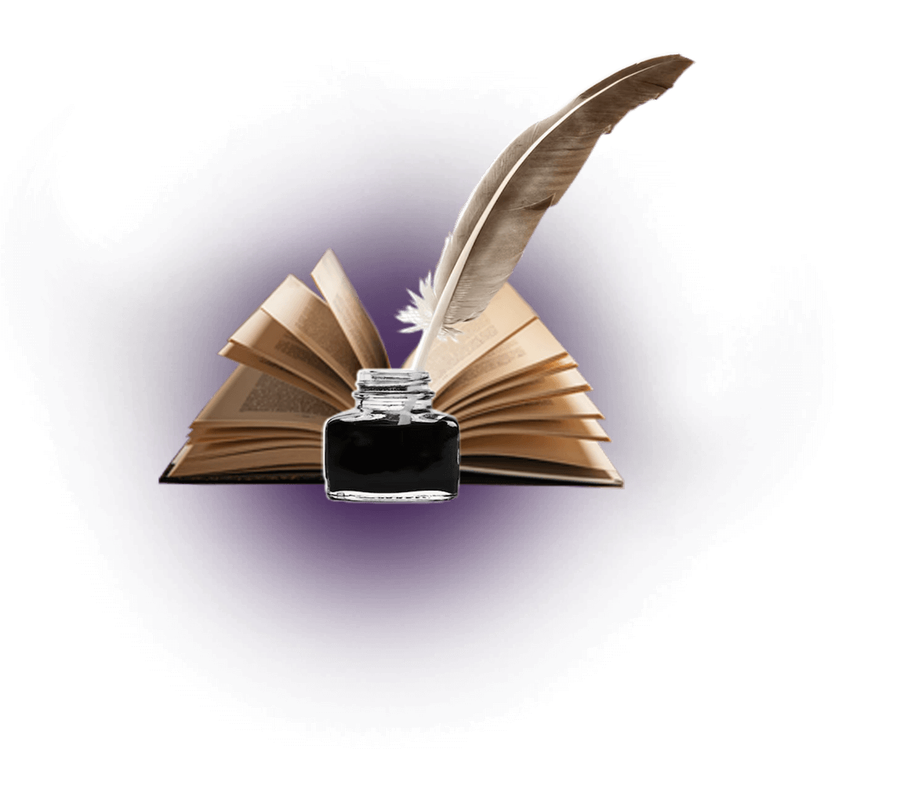

Не Святой Петербург
Стылым холодом, Северным холодом пахнет в городе. Птицы на
площади, Словно комья из перьев и инея, И уныние. Всюду
уныние.
Мне так холодно, до отчаяния. Все вокруг облеклось в
молчание, И укуталось до удушия В леденелое равнодушие.
И нет выхода через дворики, Замело в них моё сознание.
Утомлённые сдались дворники Пред заснеженным мирозданием.
Как шаги в снегу, мысли скованны. Попытался к святыням
кинуться, И на помощь позвать… Где там! - только для бизнеса
Купола, вознесённые в Гиннеса.
Ночь. Один на замёрзшей площади В месте бывших болот и
могил, Где от холода ужас застыл, Став чугунным в глазницах
лошади,
Обессилен, присяду, закрою глаза, Чтоб меня на чуть-чуть
снег укрыл. И во сне бы мне кто-то сказал, Что я чисто и
правильно жил.
Но боюсь, что часы остановятся, Скован холодом анкер замрёт.
И в рождении нового дня Тот, кто мимо пройдёт, не найдёт
меня.
Снег смахнув с моего лица, Он найдет — мертвеца.


 
